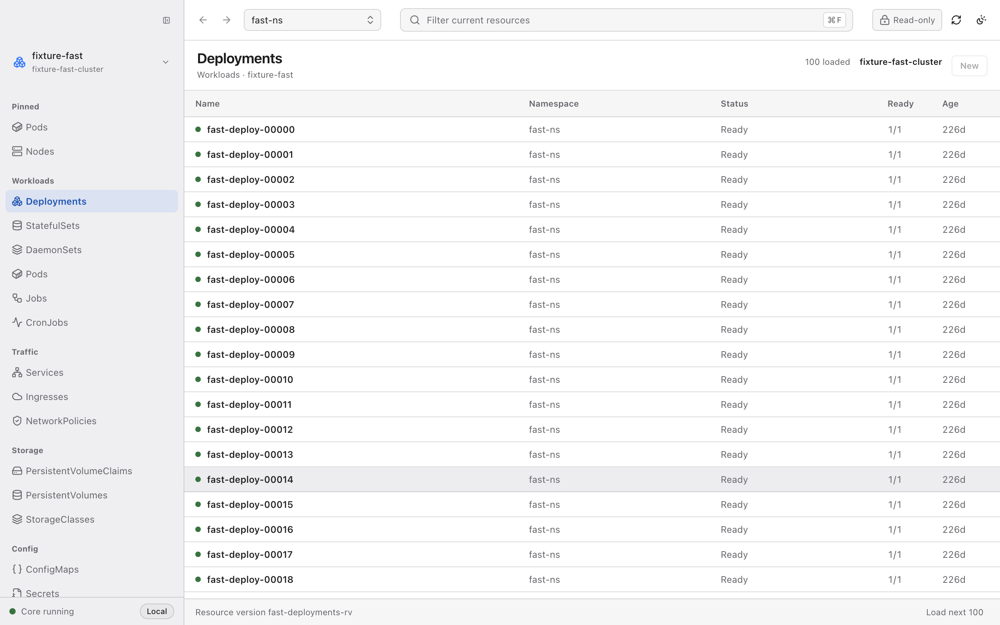
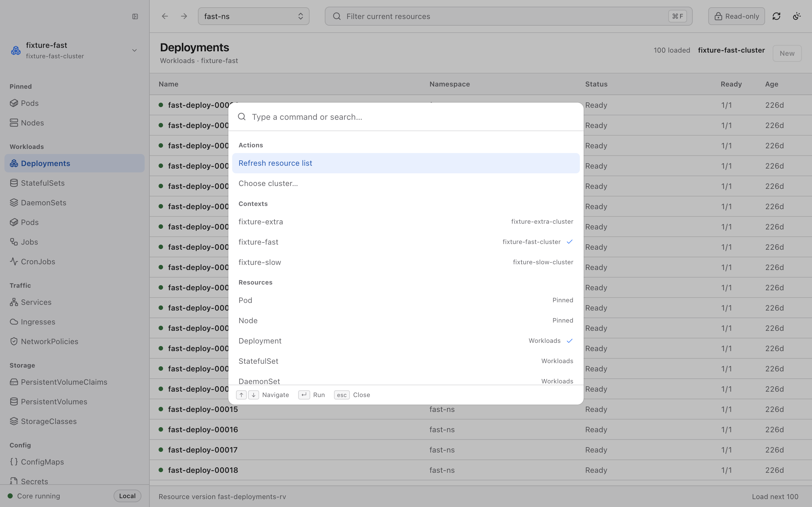

Every resource, one fast table
Native Kubernetes pagination, label selectors, and a virtualized grid keep namespaces with thousands of objects smooth. Scoped watches stream changes in — no global informer cache, no startup sync storm.
Aster is a fast, local-first Kubernetes workbench for your desktop. Browse and watch resources, inspect sanitized details, and make reviewed changes — using only the permissions your kubeconfig already has.
v0.1.0-alpha · macOS · Windows · Linux · Apache-2.0

Density where you need it, restraint where you don’t. Every surface is designed to keep large clusters responsive and every change understandable.
Native Kubernetes pagination, label selectors, and a virtualized grid keep namespaces with thousands of objects smooth. Scoped watches stream changes in — no global informer cache, no startup sync storm.
Switch contexts, jump to any resource kind, run actions. The command palette keeps your hands on the keyboard and your place in the list intact.

Scale, image updates, and restarts run through a server-side dry-run first. Aster shows a semantic diff, checks the resource version, and applies only when you say so.
Log reads are tail-limited and capped at 4 MiB. Terminal commands run once, with argv validation and a 1 MiB output cap. No persistent shell, no follow stream.
Every write lands in a per-context operation journal — summaries only, never command contents or credentials. Answer “what did I change last Tuesday?” in seconds.
List state, scope, selection, and scroll position stay put while you inspect YAML, Events, and related objects. Pick up exactly where you left off.
The renderer never sees kubeconfig contents, tokens, Secret data, or the sidecar address. A narrow, authenticated path is the only way to the cluster.
Resource details are projected and scrubbed before they reach the window. Secret values are never displayed, and Secret mutation is disabled outright.
Clients are created per view, on demand. Watches carry bookmark handling, reconnect, and expired-resource-version reset — never a cluster-wide cache.
Aster will not mint ServiceAccounts, Roles, or bindings as a convenience. If your context can’t do it, Aster can’t either.
Free and open source under Apache-2.0. Bring your own kubeconfig — Aster discovers your contexts on first launch.